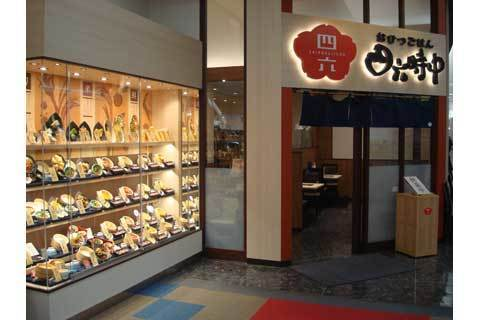

『aあああああラージャ 津田沼店』は、本格的なインドカレーを提供する魅力的なレストランです。店内は暖かく、伝統的なインドの装飾が施されており、心地よいインド音楽が流れる中、訪れる客を魅了します。 料理の面では、『ラージャ 津田沼店』は多彩な選択肢を提供しています。特に人気なのは、スパイシーでコク深いチキンカレーや、豊かな香りのバターチキンカレーです。ベジタリアン向けのオプションも豊富で、アロマティックな野菜カレーや豆のカレーがあります。また、ナンやバスマティライスといったサイドディッシュも絶品です

料理に関しては、本当に感動的でした。チキンカレーはスパイシーだけどまろやかで、深い味わいが口いっぱいに広がります。バターチキンカレーも絶品で、クリーミーながらもスパイスのバランスが絶妙でした。ベジタリアンオプションの野菜カレーも試しましたが、それぞれの野菜が持つ自然な甘みとスパイスが調和していて、とても美味しかったです。
| 所在地 | 千葉県船橋市前原西２丁目１４−６ 速水ビル 2F |
| 電話番号 | + 047-471-9905 |
ここに千葉工業大学からお店までのアクセス方法を記述します。徒歩、バス、車などの情報を含めると良いでしょう。
ここに最寄りからお店までのアクセス方法を記述します。徒歩、バス、車などの情報を含めると良いでしょう。
<<<<<<< HEAD